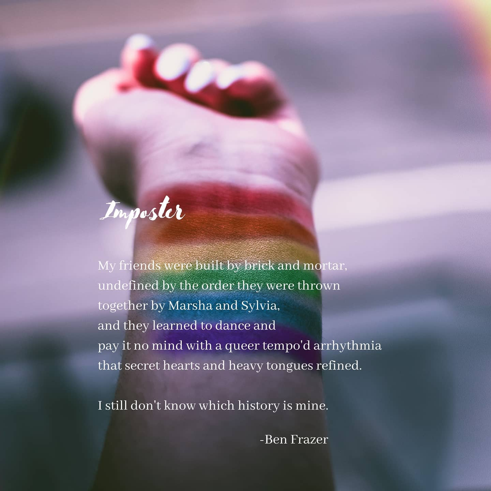

Poetry
My poetry is free form and speaks to the ways my understanding of myself has developed over time.
I write about gender and sexual identity, and I write about love in the abstract and love as I have experienced it.
My poetry is as much an exploration of myself as it is an exposure of myself and so above all I aspire to honesty: something as close to truth as I can reach within the constraints of perception.
A small collection of my favorites are here, though more can be found on my instagram.


